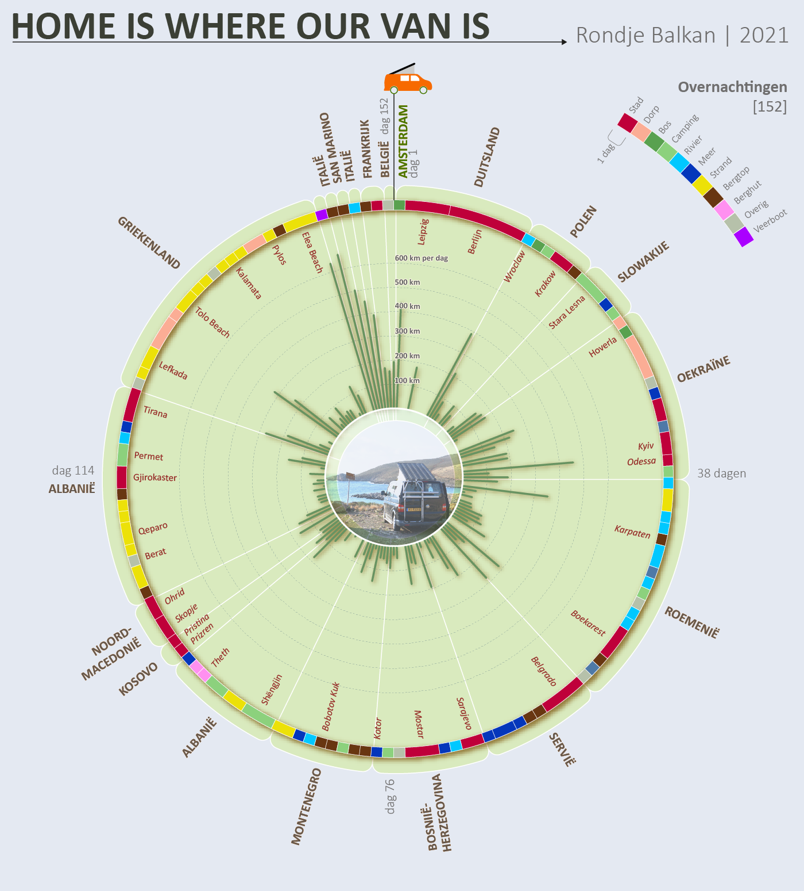

Routes en beweging
De reis van tweedehands kleding
Wat gebeurt er met je weggebrachte tweedehandskleding? Follow the Money zocht het uit door gps-tags te plaatsen op kledingstukken in containers. Voor dit artikel voor FTM liet ik zien hoe tweedehands kleding de wereld over reist, en hoe deze op het eerste gezicht circulaire keten juist leidt tot extra uitstoot en complexe, ondoorzichtige routes.
tekst animatie
tekst_story
Drones boven Den Haag
Onderzoekscollectief SPIT wist data te bemachtigen van alle dronevluchten boven de stad Den Haag. Ik visualiseerde deze data in 3D. Ik bracht in kaart waar en hoe vaak drones verschijnen, en liet zien hoe veel van deze vluchten plaatsvinden in verboden of gevoelige gebieden. Het artikel verscheen in de het weekblad Den Haag Centraal.
Visualisatie van de drone die boven de ambassadewijk vloog in Den Haag
De drone die boven het binnenhof, het ministerie van defensie en het paleis vloog
De opmerkelijke route van een drone boven het Vredespaleis
Rondje Balkan met mijn busje

In 2022 vertrokken ik en mijn vriendin op reis naar de Balkan en terug. Ik maakte onze reis inzichtelijk. In welke landen waren we en hoe lang verbleven we op 1 plek? Sliepen we op een bergtop, aan het strand of in het bos, en hoeveel kilometer reden we per dag?